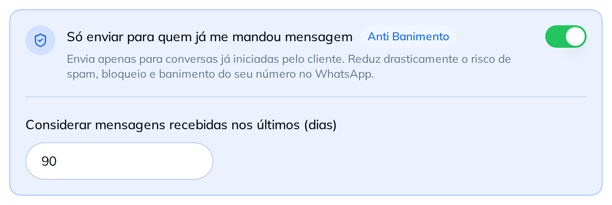

A mensagem só sai nas conversas que o seu cliente começou, dentro da janela de dias que você escolhe e num ritmo com limite diário. Para o WhatsApp, isso é resposta — e resposta ele não trata como abordagem.
